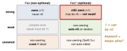
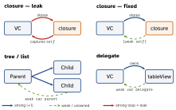

ios-swift · folio
In one line: ARC = the compiler inserts retain/release;
an object is freed deterministically the instant its strong
count hits 0 (deinit runs). No tracing GC ⇒ no cycle
detection: two objects that strongly own each other leak forever, silently.
You break cycles by making the back-edge weak or unowned.
Download PDF Print view LaTeX source

How it works
- ARC manages class instances (+ actors, closure contexts). Structs/enums are copied, not counted — but copying a struct that holds a class ref retains that object.
- strong (default) — owns: +1. weak — non-owning, must be
var+ Optional; the runtime (side table) sets it tonilwhen the object dies. unowned — non-owning, not auto-nilled; access after death = crash (unowned(unsafe)= dangling pointer, UB). - Ownership ≠ nil-ability. Two independent dials:
?answers “can it be nil?”;strong/weak/unownedanswers “does it keep the object alive?”.var x: Foo?retains exactly as hard asvar x: Foo. - weak vs unowned: can the referent die while I still hold the ref? Maybe →
weak(delegates, async callbacks — the safe default). Never — it outlives me →unowned(child that cannot exist without its parent: inCreditCard,unowned let customer: Customer). - Cycle shapes: (1) delegate — make the protocol
: AnyObjectand the propertyweak var delegate; (2) closure stored onselfthat capturesself(completion handlers,lazy var, Combinesink); (3) parent/child back-refs — parent owns children strongly,child.parent,list.prevareweak; (4) Timer — the run loop retains it: alsoinvalidate(). - Capture list
[x]= a by-value snapshot taken when the closure is created. Without a list the closure captures the variable (sees later writes). For a reference type the snapshot copies the pointer: same object, so later mutations of the object are visible.[weak self]is the same snapshot, just non-owning. Mix:[weak self, count]. - Only escaping closures stored (directly or transitively) on
selfneed[weak self];map/forEachare non-escaping.
Example — break the cycle, prove it
final class VM {
var onChange: (() -> Void)? // VM owns the closure
func bind() {
onChange = { [weak self] in // closure does NOT own VM
guard let self else { return } // unwrap once
self.reload() }
}
func reload() {}
}
func test_VM_deallocates() {
var sut: VM? = VM(); sut?.bind()
weak var weakSut = sut // observer, not an owner
sut = nil // drop the last strong ref
XCTAssertNil(weakSut, "VM leaked - retain cycle?")
}Memory tools
- Xcode Memory Graph Debugger (debug-bar button): live objects + who holds whom; purple ! = leak/cycle. Turn on Malloc Stack Logging to see where it was allocated.
- Instruments — Leaks: finds unreachable blocks (true leaks, cycles).
- Instruments — Allocations: heap growth over time; Mark Generation exposes abandoned memory (reachable but never freed, e.g. an unbounded cache).
- Zombies: use-after-free /
EXC_BAD_ACCESS.
The two dials

Cycles and their fix

Traps
- “Optional means non-owning” — no:
var parent: Node?is strong; writeweak. [x]is by value, not by reference: snapshot at creation. Reference type → the pointer is copied.- Proving no leak:
weakref → set strong tonil→XCTAssertNil. Adeinitprint is only the manual version. - “No leaks” but memory grows → abandoned memory → Allocations.
[unowned self]in a network callback that outlives the VC = crash.Timer+[weak self]: the run loop still holds the timer —invalidate().
self in closures — what each Swift allows
| 5.0 | unowned references may be Optional | unowned var x: T? |
| 5.3 | SE-0269: implicit self after [self] or in a struct | { [self] in reload() } |
| 5.7 | SE-0345: if let shorthand | guard let self else {…} |
| 5.8 | SE-0365: implicit self once unwrapped | [weak self] … reload() |
Remember
“?” asks may it be nil; the keyword asks do I keep it alive. Arrows point down the tree strong, back up weak. Tools: Graph, Leaks, Allocations — “GLA”.